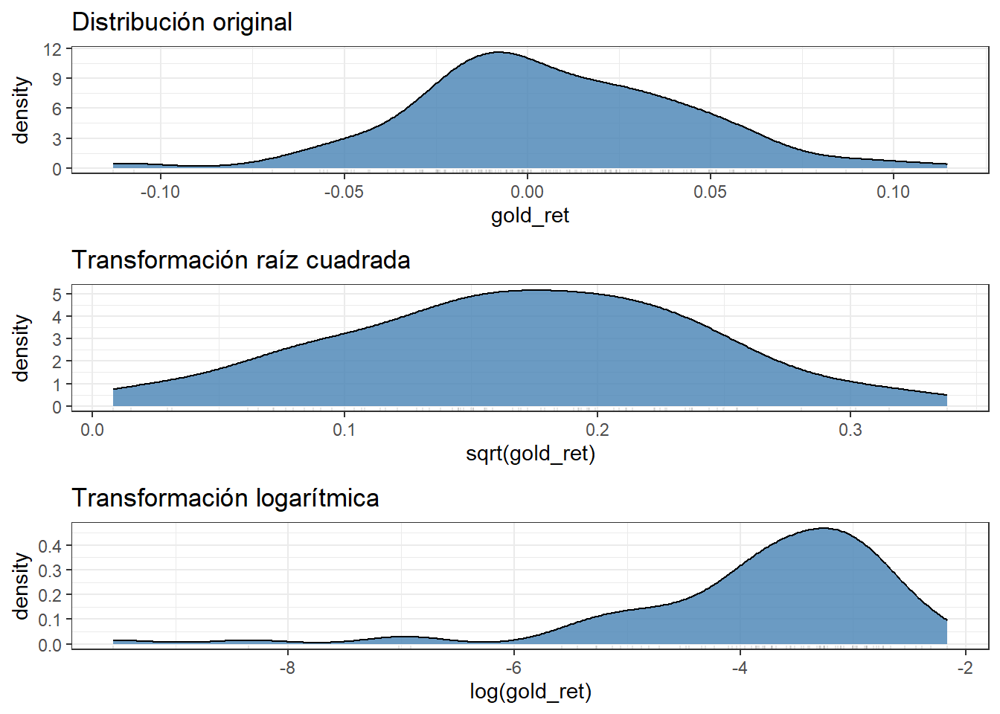
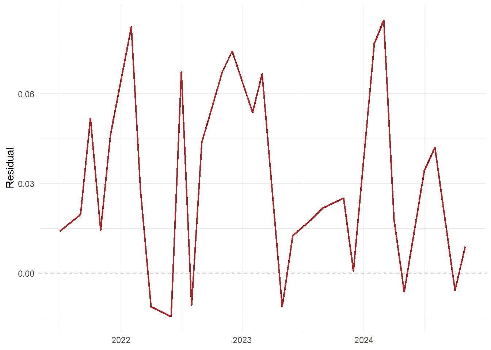

[1] 2Análisis del Precio del Oro
Dirección de Comercialización de Oro – BCE
1 Prueba
Prueba de Quarto del Banco Central del Ecuador Ghule et al. (2022)
prueba 1
prueba 2
prueba 3

Código
library(tidyverse)
library(gt)
library(quantmod)
library(tidyquant)
library(TTR)
library(zoo)
library(lubridate)
# Valor por defecto de params si alguien ejecuta sin YAML/CLI
if (!exists("params") || is.null(params$fecha_corte)) {
params <- list(fecha_corte = "2024-12-31")
}
# Rutas candidatas (si este .qmd vive en reports/)
candidatas <- c("data/gold_dataset_monthly.rds",
"../data/gold_dataset_monthly.rds",
"../../data/gold_dataset_monthly.rds")
ruta <- candidatas[file.exists(candidatas)][1]
if (is.na(ruta)) stop("No se encontró gold_dataset_monthly.rds en data/, ../data/ o ../../data/")
d <- readr::read_rds(ruta)
# Aplicar parámetro de fecha
fecha_corte <- as.Date(params$fecha_corte)
d <- d |> filter(date <= fecha_corte)
# Helper de formato
fmt_usd <- function(tbl, cols) {
tbl |> fmt_currency(columns = {{ cols }}, currency = "USD")
}
# Helpers de formato (usa sep_mark en lugar de thousands_sep)
fmt_num <- function(tbl, columns, dec = 2) {
gt::fmt_number(
data = tbl,
columns = {{ columns }},
decimals = dec,
dec_mark = ",",
sep_mark = "."
)
}
fmt_usd <- function(tbl, columns, dec = 2) {
gt::fmt_currency(
data = tbl,
columns = {{ columns }},
currency = "USD",
decimals = dec,
dec_mark = ",",
sep_mark = "."
)
}| Oro: últimos 12 meses | |
|---|---|
| date | GOLD |
| 2023-08-01 | $1.918,52 |
| 2023-09-01 | $1.913,71 |
| 2023-11-01 | $1.985,07 |
| 2023-12-01 | $2.033,55 |
| 2024-02-01 | $2.026,54 |
| 2024-03-01 | $2.158,30 |
| 2024-04-01 | $2.328,41 |
| 2024-05-01 | $2.347,47 |
| 2024-07-01 | $2.390,48 |
| 2024-08-01 | $2.465,85 |
| 2024-10-01 | $2.688,00 |
| 2024-11-01 | $2.654,04 |
2 Gráfico
Código
d %>%
ggplot(aes(date,GOLD))+
geom_line(linewidth=0.8)+
labs(x=NULL, y= "USD/oz", title = "Evolución mensual del precio del oro (USD)",
subtitle= "2006-presente",
caption="Fuente: Yahoo Finance")+
theme_minimal()+
theme(
plot.title = element_text(hjust = 0.5, size = 14, face = "bold"),
plot.subtitle = element_text(hjust = 0.5, size = 12, face = "italic"),
plot.caption = element_text(hjust = 0.5, size = 9)
)Tabla
Código
d |> select(date,GOLD) %>%
tail(12) %>%
gt() %>%
cols_label(
date="Fecha",
GOLD="Precio Oro (USD)/oz"
) %>%
tab_header(title = "Oro: últimos 12 meses") %>%
fmt_usd(columns = GOLD) %>%
tab_source_note(
source_note = "Fuente:FED"
)| Oro: últimos 12 meses | |
|---|---|
| Fecha | Precio Oro (USD)/oz |
| 2023-08-01 | $1.918,52 |
| 2023-09-01 | $1.913,71 |
| 2023-11-01 | $1.985,07 |
| 2023-12-01 | $2.033,55 |
| 2024-02-01 | $2.026,54 |
| 2024-03-01 | $2.158,30 |
| 2024-04-01 | $2.328,41 |
| 2024-05-01 | $2.347,47 |
| 2024-07-01 | $2.390,48 |
| 2024-08-01 | $2.465,85 |
| 2024-10-01 | $2.688,00 |
| 2024-11-01 | $2.654,04 |
| Fuente:FED | |
3 UNIDAD 2. INTRODUCCIÓN A MACHINE LEARNING: REGRESIÓN LINEAL

3.1 Machine Learning
¿En donde podemos aplicar Machine Learning (ML)?

4 UNIDAD 3. Creación de un flujo de trabajo de Machine Learning (ML)
4.1 Introducción a la regresión lineal en R-lm
La regresión lineal es un modelo estadístico y de machine learning supervisado que se utiliza para explicar y predecir una variable dependiente (también llamada variable respuesta o Y) a partir de una o varias variables independientes (también llamadas regresores, predictores o X).
La idea central es ajustar una línea recta (o hiperplano en dimensiones mayores) que relacione los valores de X con los de Y, minimizando la diferencia entre los valores observados y los predichos.
Forma matemática
Para una regresión lineal simple (con una sola variable (X)):
\(Y_i = \beta_0 + \beta_1 X_i + \varepsilon_i\)
- \(Y_i\): Variable dependiente (lo que queremos explicar).
- \(X_i\): Variable independiente (el predictor).
- \(\beta_0\): Intercepto (valor de \(Y\) cuando \(X=0\)).
- \(\beta_1\): Pendiente (cambio promedio en \(Y\) por cada unidad adicional de \(X\)).
- \(\varepsilon_i\): término de error (factores no observados).
En la regresión múltiple (con varios predictores):
\(Y_i = \beta_0 + \beta_1 X_{1i} + \beta_2 X_{2i} + \dots + \beta_k X_{ki} + \varepsilon_i\)
¿Cómo se estima?
Se utiliza el método de Mínimos Cuadrados Ordinarios (MCO / OLS, por sus siglas en inglés), que busca los valores de los coeficiente que minimizan la suma de los errores al cuadrado:
\(\min_{\beta} \sum_{i=1}^{n} (Y_i - \hat{Y}_i)^2\)
Interpretación
El modelo explica la relación promedio lineal entre \(Y\) y las variables \(X\).
Los coeficientes $\beta$ representan el efecto marginal de cada variable independiente sobre \(Y\),manteniendo las demás constante.
El \(R^2\) mide el porcentaje de la variabilidad de \(Y\) explicado por el modelo.
Ejemplo intuitivo
Si \(Y\)= ingreso mensual y \(X\) años de educación
\(Ingreso\) = \(\beta_0\)+\(\beta_1\)x \(Educación\)+\(\varepsilon_i\)
\(\beta_0\): Ingreso esperado si la educación = \(0\)
\(\beta_1\): Cuanto aumenta (en promedio) el ingreso por cada año adicional de educación.
En Resumen
Un modelo estadístico y predictivo.
Busca una relación lineal entre variables
Se estima normalmente con mínimos cuadrados.
Es una de las herramientas más usadas en estadística, econometría y machine learning.
¡Vamos a la practica!
Observamos la gráfica del oro
Código
plot(d$date, d$GOLD,
type = "l", # "l" = line
col = "blue",
lwd = 2, # grosor de la línea
xlab = "Fecha",
ylab = "Valor Oro en niveles",
main = "Evolución del oro en niveles")
Observamos la gráfica del dólar
Código
plot(d$date, d$DOLLAR,
type = "l", # "l" = line
col = "blue",
lwd = 2, # grosor de la línea
xlab = "Fecha",
ylab = "Dolar en niveles",
main = "Evolución del dólar en niveles")
Retornos en gráficos: Oro
Código
plot(d$date, d$gold_ret,
type = "l", # "l" = line
col = "blue",
lwd = 2, # grosor de la línea
xlab = "Fecha",
ylab = "Retorno del oro",
main = "Evolución del retorno del oro")
Retornos en gráficos: Dolar
Código
plot(d$date, d$dollar_ret,
type = "l", # "l" = line
col = "blue",
lwd = 2, # grosor de la línea
xlab = "Fecha",
ylab = "Retorno del dólar",
main = "Evolución del retorno del dólar")
Código
s1 <- d |>
select(date, gold_ret, dollar_ret) |>
drop_na()
print(s1)# A tibble: 148 × 3
date gold_ret dollar_ret
<date> <dbl> <dbl>
1 2006-02-01 0.00898 0.00274
2 2006-03-01 0.00433 0.00223
3 2006-05-01 0.0995 -0.0222
4 2006-06-01 -0.113 0.0123
5 2006-08-01 -0.00576 -0.00780
6 2006-09-01 -0.0495 0.00274
7 2006-11-01 0.0694 -0.00791
8 2006-12-01 0.00379 -0.00779
9 2007-02-01 0.0559 -0.00384
10 2007-03-01 -0.0175 -0.00494
# ℹ 138 more rowsCódigo
regresion <- lm(gold_ret ~ dollar_ret, data = s1)
summary(regresion)
Call:
lm(formula = gold_ret ~ dollar_ret, data = s1)
Residuals:
Min 1Q Median 3Q Max
-0.106215 -0.021778 -0.001336 0.017674 0.115190
Coefficients:
Estimate Std. Error t value Pr(>|t|)
(Intercept) 0.006652 0.002804 2.372 0.019 *
dollar_ret -1.091295 0.206016 -5.297 4.25e-07 ***
---
Signif. codes: 0 '***' 0.001 '**' 0.01 '*' 0.05 '.' 0.1 ' ' 1
Residual standard error: 0.03408 on 146 degrees of freedom
Multiple R-squared: 0.1612, Adjusted R-squared: 0.1555
F-statistic: 28.06 on 1 and 146 DF, p-value: 4.246e-07Interpretemos
\[ gold\_ret_{t} = 0.006652 - 1.0913 \cdot dollar\_ret_{t} + \varepsilon_{t} \]
Coeficientes
Intercepto: \((0.006652,\; p=0.019)\)
Cuando el retorno del dólar es cero, el retorno promedio del oro es aproximadamente \(0.66\%\).
Es significativo al \(5\%\) (\(p < 0.05\)).Pediente: \((-1.0913,\; p < 0.001)\)
Por cada incremento de \(1\) unidad en el retorno del dólar, el retorno del oro disminuye en promedio \(1.09\) unidades.
Es altamente significativo (\(p \approx 0.000000425\)).
El signo negativo confirma la teoría: la apreciación del dólar tiende a reducir el precio del oro.
Coeficientes
Intercepto \((0.006652,\; p=0.019)\)
Cuando el retorno del dólar es cero:
\[ \hat{Y} = 0.006652 \]
El retorno promedio del oro es ≈ \(0.66\%\).
Es significativo al \(5\%\) (\(p < 0.05\)).
Pendiente \((-1.0913,\; p < 0.001)\)
Por cada incremento de \(1\) unidad en el retorno del dólar:
\[ \Delta gold\_ret = -1.0913 \cdot \Delta dollar\_ret \]
El retorno del oro disminuye en promedio \(1.09\) unidades.
Es altamente significativo (\(p \approx 0.000000425\)).
El signo negativo confirma la teoría: la apreciación del dólar tiende a reducir el precio del oro.
🔹 Bondad de ajuste
\[ R^2 = 0.1612 \quad (16.1\%) \]
El modelo explica solo un \(16\%\) de la variación en el retorno del oro.
Esto es común en series financieras: el oro depende de múltiples factores, no solo del dólar.
\[ R^2_{ajustado} = 0.155 \]
Confirma que la complejidad no añade mucha pérdida.
Error estándar residual:
\[ \sigma_{\hat{\varepsilon}} = 0.03408 \]
En promedio, los residuos (errores) son de \(3.4\) puntos porcentuales.
🔹 Pruebas de significancia global
\[ F = 28.06, \quad p < 0.001 \]
El modelo en su conjunto es estadísticamente significativo.
Al menos un coeficiente (aquí \(\beta_1\)) difiere de cero.
🔹 Resumen interpretativo
- Dirección: relación negativa clara entre dólar y oro.
- Magnitud: movimientos del dólar tienen un efecto importante en el oro.
- Significancia: el efecto es estadísticamente robusto.
- Limitación: el modelo explica solo una fracción pequeña de la variación (\(16\%\)).
📊 Conclusión
La regresión simple muestra evidencia sólida de que el dólar influye en el oro de forma negativa.
Sin embargo, la baja capacidad predictiva (\(R^2\) bajo) implica que se necesitan otros factores (petróleo, tasas de interés, inflación, shocks geopolíticos) para construir un modelo predictivo más fuerte.
Cuadro resumen
Código
library(gt)
#| label: simple-lm
lm_s <- lm(gold_ret ~ dollar_ret, data = s1)
broom::tidy(lm_s, conf.int = TRUE) |>
gt() |>
tab_header(title = "OLS (simple): coeficientes e IC 95%") |>
fmt_num(c(estimate, std.error, statistic, p.value, conf.low, conf.high), dec = 6)| OLS (simple): coeficientes e IC 95% | ||||||
|---|---|---|---|---|---|---|
| term | estimate | std.error | statistic | p.value | conf.low | conf.high |
| (Intercept) | 0,006652 | 0,002804 | 2,371849 | 0,019004 | 0,001109 | 0,012194 |
| dollar_ret | −1,091295 | 0,206016 | −5,297149 | 0,000000 | −1,498453 | −0,684137 |
Un cuadro mas completo
Código
library(gt)
resumen <- broom::tidy(lm_s, conf.int = TRUE) |>
mutate(
sig = case_when(
p.value < 0.01 ~ "***",
p.value < 0.05 ~ "**",
p.value < 0.1 ~ "*",
TRUE ~ ""
),
interpretacion = c(
"Cuando el retorno del dólar es 0, el oro sube ≈ 0.66% en promedio",
"Un aumento de 1% en el retorno del dólar reduce el retorno del oro en ≈ 1.09%"
)
)
gt(resumen) |>
fmt_number(columns = c(estimate, std.error, statistic, p.value, conf.low, conf.high),
decimals = 6, dec_mark = ",", sep_mark = ".") |>
tab_header(title = "OLS (simple): coeficientes e interpretación") |>
cols_label(
term = "Variable",
estimate = "Estimador",
std.error = "Error Est.",
statistic = "t",
p.value = "p-valor",
conf.low = "IC 95% (Inf)",
conf.high = "IC 95% (Sup)",
sig = "Sig.",
interpretacion = "Interpretación"
)| OLS (simple): coeficientes e interpretación | ||||||||
|---|---|---|---|---|---|---|---|---|
| Variable | Estimador | Error Est. | t | p-valor | IC 95% (Inf) | IC 95% (Sup) | Sig. | Interpretación |
| (Intercept) | 0,006652 | 0,002804 | 2,371849 | 0,019004 | 0,001109 | 0,012194 | ** | Cuando el retorno del dólar es 0, el oro sube ≈ 0.66% en promedio |
| dollar_ret | −1,091295 | 0,206016 | −5,297149 | 0,000000 | −1,498453 | −0,684137 | *** | Un aumento de 1% en el retorno del dólar reduce el retorno del oro en ≈ 1.09% |
¿Cómo se ve gráficamente esta relación lineal?
Código
# Gráfico de dispersión correcto
plot(d$dollar_ret, d$gold_ret,
main = "Regresión lineal: Oro vs Dólar",
xlab = "Rendimiento del dólar",
ylab = "Rendimiento del oro",
pch = 19, col = "darkgray")
# Modelo consistente
modelo <- lm(gold_ret ~ dollar_ret, data = d)
# Línea de regresión
abline(modelo, col = "blue", lwd = 2)
Gráfico con ggplot
Código
s1 |> ggplot(aes(dollar_ret, gold_ret)) +
geom_point(alpha = 0.6) +
geom_smooth(method = "lm", se = TRUE, linewidth = 0.9) +
labs(x = "Retorno del Dólar (DXY)", y = "Retorno del Oro", title = "Regresión lineal simple") +
theme_minimal()
Diagnostico predictivo inicial
Código
library(broom)Warning: package 'broom' was built under R version 4.4.3Código
library(gt)
# Ajuste del modelo
lm_s <- lm(gold_ret ~ dollar_ret, data = d)
# Resumen del modelo
glance_tbl <- broom::glance(lm_s)
# Tabla con formateo
glance_tbl %>%
gt() %>%
tab_header(title = "Diagnóstico global (R², F, σ, AIC/BIC)") %>%
fmt_number(
columns = c(r.squared, adj.r.squared, sigma, statistic, p.value, AIC, BIC, logLik, deviance),
decimals = 6,
dec_mark = ",",
sep_mark = "."
)| Diagnóstico global (R², F, σ, AIC/BIC) | |||||||||||
|---|---|---|---|---|---|---|---|---|---|---|---|
| r.squared | adj.r.squared | sigma | statistic | p.value | df | logLik | AIC | BIC | deviance | df.residual | nobs |
| 0,161208 | 0,155463 | 0,034085 | 28,059791 | 0,000000 | 1 | 291,080891 | −576,161781 | −567,170145 | 0,169621 | 146 | 148 |
| Estadístico | Valor | Interpretación |
|---|---|---|
| R² | 0.161 | El modelo explica el 16.1% de la variación en el retorno del oro a partir del retorno del dólar. |
| R² ajustado | 0.155 | Similar al R², ajusta por el número de predictores. Confirma que el modelo no está sobreajustado. |
| σ (residual standard error) | 0.0341 | El error típico de los residuos es ≈ 3.4 puntos porcentuales en los retornos del oro. Indica la magnitud del error de predicción. |
| F (statistic) | 28.06 | Prueba de significancia global: el modelo como conjunto es significativo. |
| p-value (modelo) | < 0.0001 | Muy fuerte evidencia de que al menos un coeficiente (el retorno del dólar) explica parte de la variación en el oro. |
| df (grados de libertad regresor) | 1 | Solo hay un predictor (dollar_ret). |
| df.residual | 146 | Grados de libertad de los residuos (n - k - 1). |
| nobs | 148 | Observaciones efectivas utilizadas. |
| LogLik | 291.08 | Valor de la función de verosimilitud. Base para comparar modelos. |
| AIC | -576.16 | Criterio de Akaike: más bajo indica mejor ajuste relativo. |
| BIC | -567.17 | Criterio de Bayes: penaliza más por complejidad, útil en comparación de modelos. |
| Deviance | 0.1696 | Suma de residuos al cuadrado (varianza no explicada). |
4.2 Supuestos de OLS y diagnósticos
Linealidad: Este supuesto implica que la relación entre las variables independientes y la variable dependiente debe ser lineal. Si la relación es no lineal, los resultados de la regresión (lineal) pueden ser poco confiables y conducir a interpretaciones erróneas sobre la relación entre las variables.
Normalidad: El supuesto de normalidad establece que los errores de la regresión deben seguir una distribución normal. ¡Cuidado con esto!, los errores, no las variables. Cuando este supuesto se cumple, las pruebas de hipótesis y los intervalos de confianza pueden interpretarse con mayor precisión. Si la normalidad no se cumple, los intervalos de confianza y las pruebas de hipótesis pueden verse afectados, lo que puede conducir a conclusiones erróneas.
Homocedasticidad: Este supuesto implica que la varianza de los errores debe ser constante en todos los niveles de las variables predictoras. Cuando se viola este supuesto, se produce heterocedasticidad, lo que significa que la dispersión de los errores varía en diferentes rangos de las variables predictoras. La presencia de heterocedasticidad puede distorsionar los intervalos de confianza y los valores p-value, lo que puede afectar la precisión de las pruebas de hipótesis.
Independencia: El supuesto de independencia indica que los errores de la regresión no deben estar correlacionados entre sí. Si hay autocorrelación presente, puede afectar la precisión de los coeficientes y las pruebas de hipótesis, lo que lleva a conclusiones erróneas sobre la importancia de las variables predictoras. ¿Qué es la autocorrelación? la presencia de autocorrelación en los residuos indica que los errores del modelo muestran cierto patrón sistemático en su distribución a lo largo del tiempo. Recordad que los errores o residuos de un modelo de regresión deberían distribuirse de manera aleatoria y seguir una distribución normal con media cero y varianza constante.
Código
aug <- broom::augment(lm_s)
aug |>
ggplot(aes(.fitted, .resid)) +
geom_hline(yintercept = 0, linetype = 2, color="gray50") +
geom_point(alpha = 0.6) +
labs(x="Ajustados", y="Residuos") + theme_minimal()
Código
qq <- qqnorm(resid(lm_s), plot.it = FALSE)
tibble(x = qq$x, y = qq$y) |>
ggplot(aes(x, y)) +
geom_abline(slope = 1, intercept = 0, color="gray50") +
geom_point(alpha = 0.6) + theme_minimal() +
labs(x="Teórico", y="Muestral")
Código
# Pruebas formales
dw <- lmtest::dwtest(lm_s) # autocorrelación
bp <- lmtest::bptest(lm_s) # heterocedasticidad (Breusch–Pagan)
sh <- shapiro.test(resid(lm_s)) # normalidad (muestras pequeñas)
tibble(
prueba = c("Durbin–Watson", "Breusch–Pagan", "Shapiro–Wilk"),
estadistico = c(dw$statistic, bp$statistic, sh$statistic),
p_value = c(dw$p.value, bp$p.value, sh$p.value)
) |>
gt() |> tab_header(title = "Pruebas de supuestos (simple)") |>
fmt_num(c(estadistico, p_value), dec = 6)| Pruebas de supuestos (simple) | ||
|---|---|---|
| prueba | estadistico | p_value |
| Durbin–Watson | 1,989843 | 0,467587 |
| Breusch–Pagan | 2,303729 | 0,129064 |
| Shapiro–Wilk | 0,985118 | 0,111643 |
Código
cook <- cooks.distance(lm_s)
thr <- 4/(nrow(s1) - 2 - 1) # umbral aproximado
tibble(i = seq_along(cook), cooksD = as.numeric(cook)) |>
ggplot(aes(i, cooksD)) +
geom_hline(yintercept = thr, color="firebrick", linetype = 2) +
geom_point(alpha = 0.6) + theme_minimal() +
labs(x="Índice", y="Cook's D", subtitle=paste("Umbral ≈", round(thr, 4)))• Con 1 predictor, VIF = 1 trivialmente (no hay multicolinealidad).
• En series de tiempo, la autocorrelación y heterocedasticidad son frecuentes. Lo importante es reportarlo y pasar a un flujo robusto fuera de muestra.
4.3 Análisis Eploratorio de Datos (EDA)
Código
library(tidymodels)Warning: package 'tidymodels' was built under R version 4.4.3── Attaching packages ────────────────────────────────────── tidymodels 1.3.0 ──✔ dials 1.4.1 ✔ rsample 1.3.1
✔ infer 1.0.9 ✔ tune 1.3.0
✔ modeldata 1.5.1 ✔ workflows 1.3.0
✔ parsnip 1.3.2 ✔ workflowsets 1.1.1
✔ recipes 1.3.1 ✔ yardstick 1.3.2Warning: package 'dials' was built under R version 4.4.3Warning: package 'scales' was built under R version 4.4.3Warning: package 'infer' was built under R version 4.4.3Warning: package 'modeldata' was built under R version 4.4.3Warning: package 'parsnip' was built under R version 4.4.3Warning: package 'recipes' was built under R version 4.4.3Warning: package 'rsample' was built under R version 4.4.3Warning: package 'tune' was built under R version 4.4.3Warning: package 'workflowsets' was built under R version 4.4.3Warning: package 'yardstick' was built under R version 4.4.3── Conflicts ───────────────────────────────────────── tidymodels_conflicts() ──
✖ scales::discard() masks purrr::discard()
✖ dplyr::filter() masks stats::filter()
✖ xts::first() masks dplyr::first()
✖ recipes::fixed() masks stringr::fixed()
✖ dplyr::lag() masks stats::lag()
✖ xts::last() masks dplyr::last()
✖ dials::momentum() masks TTR::momentum()
✖ yardstick::spec() masks readr::spec()
✖ recipes::step() masks stats::step()Código
library(tidyverse)
library(skimr)Warning: package 'skimr' was built under R version 4.4.3Código
library(DataExplorer)Warning: package 'DataExplorer' was built under R version 4.4.3Código
library(ggpubr)Warning: package 'ggpubr' was built under R version 4.4.3Código
library(univariateML)Warning: package 'univariateML' was built under R version 4.4.3Código
library(GGally)Warning: package 'GGally' was built under R version 4.4.3Código
library(doParallel)Warning: package 'doParallel' was built under R version 4.4.3Cargando paquete requerido: foreachWarning: package 'foreach' was built under R version 4.4.3
Adjuntando el paquete: 'foreach'The following objects are masked from 'package:purrr':
accumulate, whenCargando paquete requerido: iteratorsWarning: package 'iterators' was built under R version 4.4.3Cargando paquete requerido: parallelCódigo
skim(d)| Name | d |
| Number of rows | 148 |
| Number of columns | 16 |
| _______________________ | |
| Column type frequency: | |
| Date | 1 |
| factor | 1 |
| numeric | 14 |
| ________________________ | |
| Group variables | None |
Variable type: Date
| skim_variable | n_missing | complete_rate | min | max | median | n_unique |
|---|---|---|---|---|---|---|
| date | 0 | 1 | 2006-02-01 | 2024-11-01 | 2015-10-31 | 148 |
Variable type: factor
| skim_variable | n_missing | complete_rate | ordered | n_unique | top_counts |
|---|---|---|---|---|---|
| up_next | 0 | 1 | FALSE | 2 | UP: 77, DOW: 71 |
Variable type: numeric
| skim_variable | n_missing | complete_rate | mean | sd | p0 | p25 | p50 | p75 | p100 | hist |
|---|---|---|---|---|---|---|---|---|---|---|
| GOLD | 0 | 1 | 1405.15 | 443.95 | 555.92 | 1175.30 | 1320.82 | 1745.30 | 2688.00 | ▃▇▆▂▁ |
| DOLLAR | 0 | 1 | 105.47 | 12.21 | 86.32 | 93.65 | 108.49 | 115.85 | 126.53 | ▇▅▂▇▅ |
| WTI | 0 | 1 | 73.02 | 21.49 | 16.55 | 58.08 | 71.94 | 88.72 | 133.37 | ▁▆▇▅▁ |
| FEDFUNDS | 0 | 1 | 1.60 | 1.97 | 0.05 | 0.12 | 0.36 | 2.40 | 5.33 | ▇▂▁▁▃ |
| CPI | 0 | 1 | 245.92 | 31.78 | 199.40 | 220.25 | 237.75 | 258.76 | 316.45 | ▆▇▅▂▃ |
| gold_ret | 0 | 1 | 0.01 | 0.04 | -0.11 | -0.02 | 0.00 | 0.03 | 0.11 | ▁▃▇▅▁ |
| dollar_ret | 0 | 1 | 0.00 | 0.01 | -0.03 | -0.01 | 0.00 | 0.01 | 0.07 | ▂▇▂▁▁ |
| wti_ret | 0 | 1 | 0.01 | 0.11 | -0.43 | -0.05 | 0.01 | 0.06 | 0.73 | ▁▇▅▁▁ |
| infl_yoy | 0 | 1 | 0.03 | 0.02 | -0.02 | 0.01 | 0.02 | 0.03 | 0.09 | ▂▇▆▁▁ |
| gold_next | 0 | 1 | 1412.04 | 451.01 | 558.33 | 1171.60 | 1336.26 | 1749.77 | 2654.04 | ▃▇▅▃▁ |
| gold_next_ret | 0 | 1 | 0.00 | 0.04 | -0.11 | -0.02 | 0.00 | 0.03 | 0.11 | ▁▃▇▅▁ |
| ma6 | 0 | 1 | 1380.40 | 428.38 | 502.64 | 1155.15 | 1300.96 | 1710.02 | 2516.22 | ▃▇▅▅▁ |
| ma12 | 0 | 1 | 1351.42 | 420.25 | 466.16 | 1157.21 | 1287.41 | 1672.69 | 2334.97 | ▃▅▇▆▁ |
| rsi14 | 0 | 1 | 61.76 | 14.63 | 31.59 | 52.49 | 61.55 | 72.75 | 91.28 | ▃▃▇▅▃ |
Datos faltantes
Código
d %>% map_dbl(.f = function(x){sum(is.na(x))}) date GOLD DOLLAR WTI FEDFUNDS
0 0 0 0 0
CPI gold_ret dollar_ret wti_ret infl_yoy
0 0 0 0 0
gold_next gold_next_ret up_next ma6 ma12
0 0 0 0 0
rsi14
0 Missing data
Código
plot_missing(
data = d,
title = "Porcentaje de valores ausentes",
ggtheme = theme_bw(),
theme_config = list(legend.position = "none")
)
Distribución o Densidad
Código
p1 <- ggplot(data = d, aes(x = GOLD)) +
geom_density(fill = "steelblue", alpha = 0.8) +
geom_rug(alpha = 0.1) +
scale_x_continuous(labels = scales::comma) +
labs(title = "Distribución original") +
theme_bw()
p2 <- ggplot(data = d, aes(x = sqrt(GOLD))) +
geom_density(fill = "steelblue", alpha = 0.8) +
geom_rug(alpha = 0.1) +
scale_x_continuous(labels = scales::comma) +
labs(title = "Transformación raíz cuadrada") +
theme_bw()
p3 <- ggplot(data = d, aes(x = log(GOLD))) +
geom_density(fill = "steelblue", alpha = 0.8) +
geom_rug(alpha = 0.1) +
scale_x_continuous(labels = scales::comma) +
labs(title = "Transformación logarítmica") +
theme_bw()
ggarrange(p1, p2, p3, ncol = 1, align = "v")Varible ret
Código
p1 <- ggplot(data = d, aes(x = gold_ret)) +
geom_density(fill = "steelblue", alpha = 0.8) +
geom_rug(alpha = 0.1) +
scale_x_continuous(labels = scales::comma) +
labs(title = "Distribución original") +
theme_bw()
p2 <- ggplot(data = d, aes(x = sqrt(gold_ret))) +
geom_density(fill = "steelblue", alpha = 0.8) +
geom_rug(alpha = 0.1) +
scale_x_continuous(labels = scales::comma) +
labs(title = "Transformación raíz cuadrada") +
theme_bw()
p3 <- ggplot(data = d, aes(x = log(gold_ret))) +
geom_density(fill = "steelblue", alpha = 0.8) +
geom_rug(alpha = 0.1) +
scale_x_continuous(labels = scales::comma) +
labs(title = "Transformación logarítmica") +
theme_bw()
ggarrange(p1, p2, p3, ncol = 1, align = "v")
Distribución de variables continuas
Código
plot_density(
data = d %>% select(-up_next),
ncol = 3,
title = "Distribución variables continuas",
ggtheme = theme_bw(),
theme_config = list(
plot.title = element_text(size = 16, face = "bold"),
strip.text = element_text(colour = "black", size = 12, face = 2)
)
)

Plot de variables cualitativas
Código
plot_bar(
d,
ncol = 3,
title = "Número de observaciones por grupo",
ggtheme = theme_bw(),
theme_config = list(
plot.title = element_text(size = 16, face = "bold"),
strip.text = element_text(colour = "black", size = 12, face = 2),
legend.position = "none"
)
)1 columns ignored with more than 50 categories.
date: 148 categories
Código
eda <- d |>
select(gold_next_ret, dollar_ret, wti_ret, infl_yoy, ma6, ma12, rsi14) |>
drop_na()
cor(eda, use="pairwise.complete.obs") |>
as.data.frame() |> rownames_to_column("var") |> as_tibble() |>
gt() |> tab_header(title="Correlaciones (Pearson)") |> fmt_num(everything(), dec=3)| Correlaciones (Pearson) | |||||||
|---|---|---|---|---|---|---|---|
| var | gold_next_ret | dollar_ret | wti_ret | infl_yoy | ma6 | ma12 | rsi14 |
| gold_next_ret | 1,000 | −0,242 | 0,088 | −0,083 | −0,023 | −0,023 | 0,141 |
| dollar_ret | −0,242 | 1,000 | −0,373 | 0,214 | 0,173 | 0,175 | −0,188 |
| wti_ret | 0,088 | −0,373 | 1,000 | −0,082 | 0,021 | 0,001 | 0,191 |
| infl_yoy | −0,083 | 0,214 | −0,082 | 1,000 | 0,326 | 0,333 | 0,108 |
| ma6 | −0,023 | 0,173 | 0,021 | 0,326 | 1,000 | 0,991 | 0,032 |
| ma12 | −0,023 | 0,175 | 0,001 | 0,333 | 0,991 | 1,000 | −0,071 |
| rsi14 | 0,141 | −0,188 | 0,191 | 0,108 | 0,032 | −0,071 | 1,000 |
5 Tidymodels

6 Preprocesamiento
rsample: Creamos una división entre train y test
6.1 Partición temporal y feature engineering (Recipes)
Código
library(rsample)
library(recipes)
set.seed(123)
datos <- d |>
select(date, gold_next_ret, dollar_ret, wti_ret, infl_yoy, ma6, ma12, rsi14) |>
drop_na()
split <- initial_time_split(datos, prop = 0.80)
train <- training(split); test <- testing(split)
tibble(n_train=nrow(train), n_test=nrow(test),
min_train=min(train$date), max_train=max(train$date),
min_test=min(test$date), max_test=max(test$date)) |>
gt() |> tab_header(title="Partición temporal")| Partición temporal | |||||
|---|---|---|---|---|---|
| n_train | n_test | min_train | max_train | min_test | max_test |
| 118 | 30 | 2006-02-01 | 2021-06-01 | 2021-07-01 | 2024-11-01 |
Código
print (split)<Training/Testing/Total>
<118/30/148>Código
library(recipes)
#| label: recipe
rec <- recipes::recipe(gold_next_ret ~ dollar_ret + wti_ret + infl_yoy + ma6 + ma12 + rsi14, data=train) |>
step_zv(all_predictors()) |>
step_normalize(all_numeric_predictors()) |>
step_corr(all_numeric_predictors(), threshold = 0.95)
prep(rec) # mostrará qué variables elimina por colinealidad (p.ej. ma12)── Recipe ──────────────────────────────────────────────────────────────────────── Inputs Number of variables by roleoutcome: 1
predictor: 6── Training information Training data contained 118 data points and no incomplete rows.── Operations • Zero variance filter removed: <none> | Trained• Centering and scaling for: dollar_ret, wti_ret, infl_yoy, ... | Trained• Correlation filter on: ma12 | TrainedInputs
1 variable objetivo (
gold_next_ret) y 6 predictores (los listados)Training information
- La receta “aprendió” usando 118 observaciones de
trainy no encontró filas incompletas
Operations
Zero variance: no se eliminó ninguna (
<none>).Centering and scaling: se normalizaron todos los predictores numéricos.
Correlation filter on:
ma12: el filtro de correlación eliminóma12por estar muy correlacionada (|ρ| ≥ 0.95) con otra(s) variable(s) —típicamente conma6, porque son medias móviles muy parecidas.En otras palabras: tu diseño final para el modelo quedó con los predictores normalizados y sin
ma12(para evitar colinealidad).
- La receta “aprendió” usando 118 observaciones de
6.2 Especificación del modelo y engine (parsnip)
Código
library(parsnip)
mod_lm <- linear_reg() |> set_engine("lm")
wf <- workflow() |> add_recipe(rec) |> add_model(mod_lm)
wf══ Workflow ════════════════════════════════════════════════════════════════════
Preprocessor: Recipe
Model: linear_reg()
── Preprocessor ────────────────────────────────────────────────────────────────
3 Recipe Steps
• step_zv()
• step_normalize()
• step_corr()
── Model ───────────────────────────────────────────────────────────────────────
Linear Regression Model Specification (regression)
Computational engine: lm Ajuste, predicción y diagnóstico
Código
fit_lm <- fit(wf, data = train)
preds <- predict(fit_lm, new_data = test) |>
bind_cols(test |> select(date, gold_next_ret))
preds |> slice_tail(n=8) |>
gt() |> tab_header(title="Predicciones (últimas filas)") |>
fmt_num(c(.pred, gold_next_ret), dec=6)| Predicciones (últimas filas) | ||
|---|---|---|
| .pred | date | gold_next_ret |
| −0,011772 | 2024-02-01 | 0,065018 |
| −0,005882 | 2024-03-01 | 0,078818 |
| −0,009868 | 2024-04-01 | 0,008184 |
| −0,002909 | 2024-05-01 | −0,009112 |
| −0,002817 | 2024-07-01 | 0,031529 |
| 0,001260 | 2024-08-01 | 0,043402 |
| −0,006938 | 2024-10-01 | −0,012634 |
| −0,012919 | 2024-11-01 | −0,003942 |
Código
preds |>
ggplot(aes(gold_next_ret, .pred)) +
geom_point(alpha=0.7) +
geom_smooth(method="lm", se=FALSE, linewidth=0.9) +
labs(x="Real", y="Predicho") + theme_minimal()`geom_smooth()` using formula = 'y ~ x'Código
preds |>
mutate(resid = gold_next_ret - .pred) |>
ggplot(aes(date, resid)) +
geom_hline(yintercept=0, linetype=2, color="gray50") +
geom_line(linewidth=0.8, color="firebrick") +
theme_minimal() + labs(x=NULL, y="Residual")
Código
eng <- fit_lm |> extract_fit_engine()
broom::glance(eng) |>
gt() |> tab_header(title="Resumen (engine lm)") |>
fmt_num(c(r.squared, adj.r.squared, sigma, AIC, BIC, statistic, p.value), dec=6)| Resumen (engine lm) | |||||||||||
|---|---|---|---|---|---|---|---|---|---|---|---|
| r.squared | adj.r.squared | sigma | statistic | p.value | df | logLik | AIC | BIC | deviance | df.residual | nobs |
| 0,091388 | 0,050825 | 0,038613 | 2,252979 | 0,053903 | 5 | 219.6353 | −425,270617 | −405,875825 | 0.1669894 | 112 | 118 |
Código
lmtest::dwtest(eng); lmtest::bptest(eng); performance::check_model(eng)
Durbin-Watson test
data: eng
DW = 2.1906, p-value = 0.7778
alternative hypothesis: true autocorrelation is greater than 0
studentized Breusch-Pagan test
data: eng
BP = 12.134, df = 5, p-value = 0.032996.3 Métricas y validación temporal
Código
yardstick::metrics(preds, truth = gold_next_ret, estimate = .pred) |>
gt() |> tab_header(title="Métricas en Test") |> fmt_num(.estimate, dec=6)| Métricas en Test | ||
|---|---|---|
| .metric | .estimator | .estimate |
| rmse | standard | 0,043117 |
| rsq | standard | 0,130291 |
| mae | standard | 0,034454 |
Código
set.seed(123)
rs <- rolling_origin(
datos,
initial = 60, assess = 12, skip = 6, cumulative = TRUE
)
res_cv <- fit_resamples(wf, resamples = rs, control = control_resamples(save_pred = TRUE))
collect_metrics(res_cv) |>
gt() |> tab_header(title="CV temporal (promedios)") |> fmt_num(c(mean, std_err), dec=6)| CV temporal (promedios) | |||||
|---|---|---|---|---|---|
| .metric | .estimator | mean | n | std_err | .config |
| rmse | standard | 0,036623 | 11 | 0,002130 | Preprocessor1_Model1 |
| rsq | standard | 0,047869 | 11 | 0,013954 | Preprocessor1_Model1 |
Referencias
Ghule, Rushikesh, Abhijeet Gadhave, Manish Dubey, Jyoti Kharade, y Navi Mumbai. 2022. «Gold price prediction using machine learning». International Journal of Environmental Engineering 6 (2022).